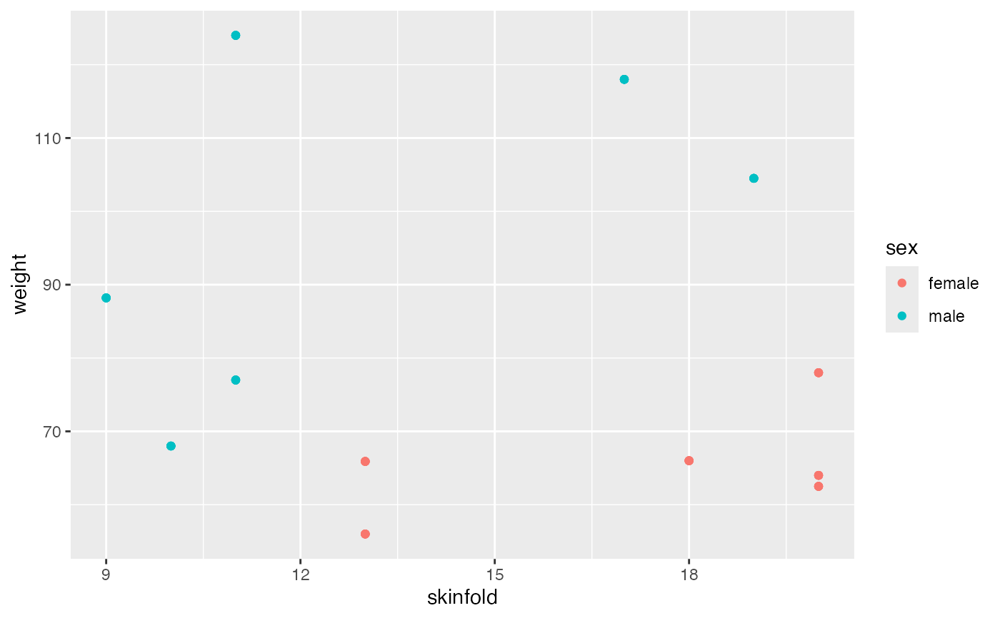

This data set contains the results of an experiment comparing the efficacy of different forms of dry ice application in reducing the temperature of the calf muscle.
Source
Dykstra, J. H., Hill, H. M., Miller, M. G., Michael T. J., Cheatham, C. C., and Baker, R.J., Comparisons of cubed ice, crushed ice, and wetted ice on intramuscular and surface temperature changes, Journal of Athletic Training 44 (2009), no. 2, 136–141.
Details
The 12 subjects in this study came three times, at least four days apart,
and received one of three ice treatments (cubed ice, crushed ice, or ice
mixed with water). In each case, the ice was prepared in a plastic bag and
applied dry to the subjects calf muscle. The temperature measurements were
taken on the skin surface and inside the calf muscle (via a 4 cm long probe)
every 30 seconds for 20 minutes prior to icing, for 20 minutes during icing,
and for 2 hours after the ice had been removed. The temperature
measurements are stored in variables that begin with b (baseline),
t (treatment), or r (recovery) followed by a numerical code
for the elapsed time formed by concatenating the number of minutes and
seconds. For example, R1230 contains the temperatures 12 minutes and
30 seconds after the ice had been removed.
Variables include
- Subject
identification number
- sex
a factor with levels
femalemale- weight
weight of subject (kg)
- Height
height of subject (cm)
- Skinfold
skinfold thickness
- calf
calf diameter (cm)
- Age
age of subject
- location
a factor with levels
intramuscularsurface- Treatment
a factor with levels
crushedcubedwet- B0
baseline temperature at time 0
- b30
baseline temperature 30 seconds after start
- b100
baseline temperature 1 minute after start
- b1930
baseline temperature 19 minutes 30 seconds start
- t0
treatment temperature at beginning of treatment
- t30
treatment temperature 30 seconds after start of treatment
- t100
treatment temperature 1 minute after start of treatment
- t1930
treatment temperature 19 minutes 30 seconds after start of treatment
- R0
recovery temperature at start of recovery
- r30
recovery temperature 30 seconds after start of recovery
- r100
recovery temperature 1 minute after start of recovery
- r12000
recovery temperature 120 minutes after start of recovery
Examples
data(Ice)
#> Warning: data set ‘Ice’ not found
gf_point(weight ~ skinfold, color = ~ sex, data = Ice)

if (require(readr) && require(tidyr)) {
Ice2 <- Ice %>%
gather("key", "temp", b0:r12000) %>%
separate(key, c("phase", "time"), sep = 1) %>%
mutate(time = parse_number(time), subject = as.character(subject))
gf_line( temp ~ time, data = Ice2 %>% filter(phase == "t"),
color = ~ sex, group = ~subject, alpha = 0.6) %>%
gf_facet_grid( treatment ~ location)
}
#> Loading required package: readr
#> Loading required package: tidyr
#>
#> Attaching package: ‘tidyr’
#> The following objects are masked from ‘package:Matrix’:
#>
#> expand, pack, unpack